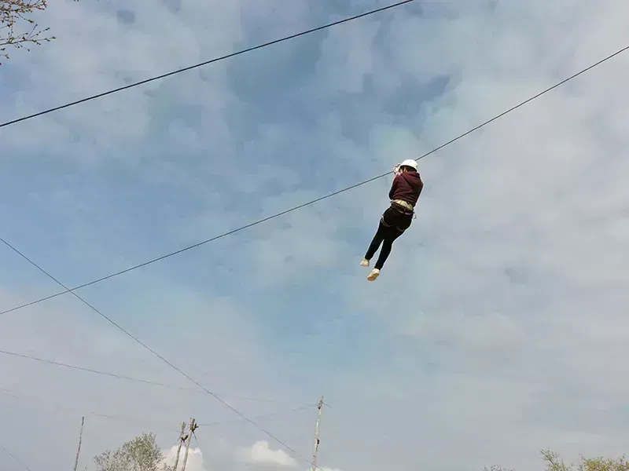
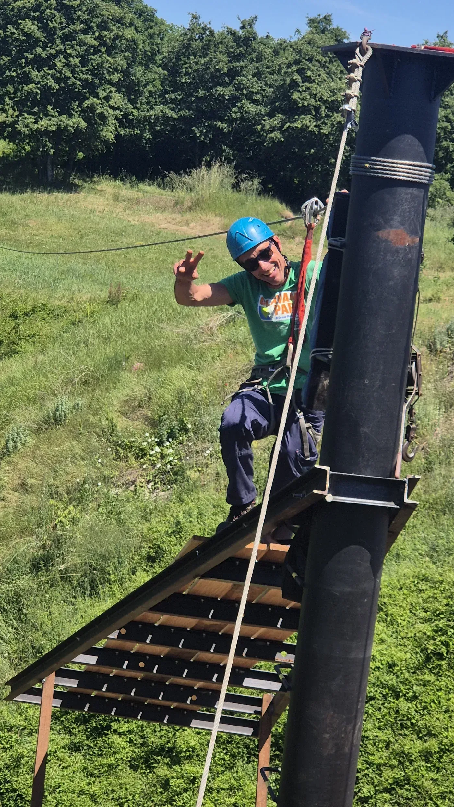
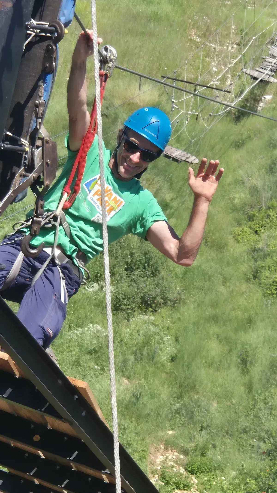
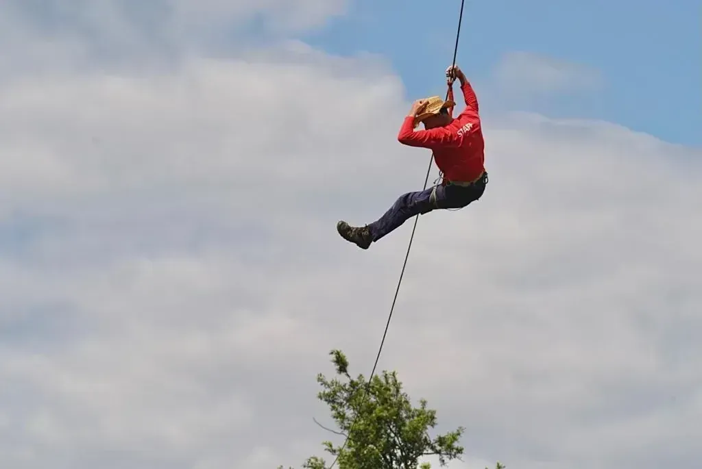
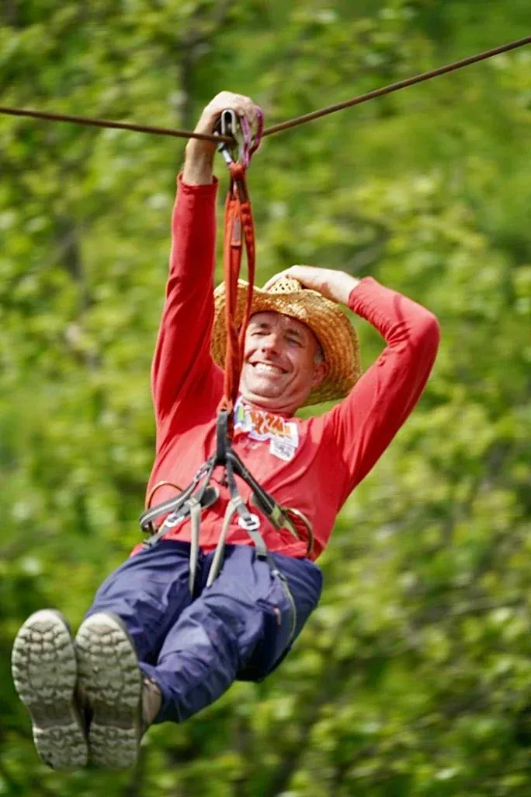
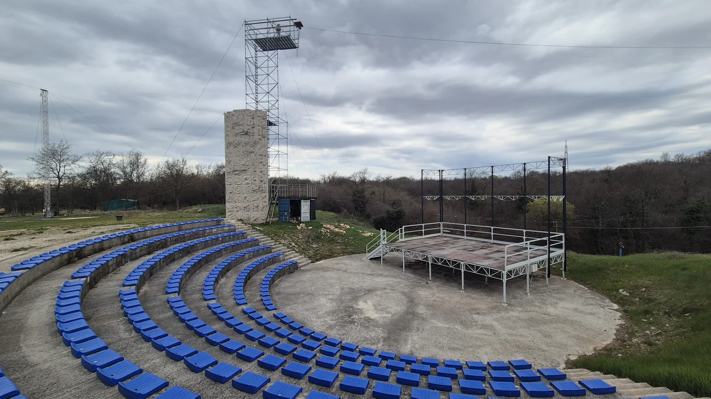

Dolinski zipline
Dolinski zipline u Glavani Parku vodi vas na dva zipline leta naprijed-natrag preko doline kroz hrastovu šumu, do visine od 20 metara. Osoblje vas spaja na užad, provodi obuku i letite između platformi s pogledom na dolinu.
Staza je popularna i među početnicima i među onima koji se vraćaju. Harnes i kaciga su osigurani; nosite zatvorenu obuću i udobnu odjeću. Kombinirajte sa Stazom u krošnjama na visokim stazama za puno zipline iskustvo u jednom posjetu.
Video dolinskog ziplinea
120 metara kroz dolinu — do 20 metara visine
Dolinski zipline samostalno je iskustvo — dva leta naprijed-natrag preko hrastove doline, do 20 metara visine. Pogled na šumu i park koji fotografije rijetko prenose. Početnici dobivaju dodatne upute na platformi.
Što ponijeti i koliko trajati
Potrebna je zatvorena obuća i udobna odjeća. Računajte 30–60 minuta uključujući obuku i red. Stalni posjetitelji često navode dolinski zipline kao omiljenu vožnju.
Fotografije i video posjetitelja — Dolinski zipline






Kombinirajte dan
Prirodno se kombinira sa Stazom u krošnjama, visokom ljuljačkom i ljudskom katapultom. Rezervirajte ili pogledajte cijene.
Planiranje posjeta
Glavani Park se nalazi u Glavanima 10, Barban — otprilike 30 minuta vožnje od Pule, 45 minuta od Rovinja i Rabca te 50 minuta od Poreča. Besplatno parkiranje je na licu mjesta. Park radi svaki dan 9–17 h; posljednji ulaz u 15 h, stoga planirajte tri do četiri sata za cijeli park.
Za dolinski zipline i ostale atrakcije možete rezervirati online za grupe do 10 osoba ili nazvati za veće grupe. Pogledajte pakete i cijene — cijeli park s katapultom €60–70 (djeca/odrasli), cijeli park bez katapulata €40–50, trening ruta + 2 igre €20–30, obiteljski paketi od €150.
Sigurnost i oprema
Svaka aktivnost u Glavani Parku vodi se pod nadzorom kvalificiranih instruktora. Oprema je CE certificirana i provjerava se dnevno. Prije početka dobivate harnes, kacigu i jasnu obuku. Više o standardima pročitajte na našoj stranici o sigurnosti.
Paketi od €20 djeca / €30 odrasli · online do 10 osoba